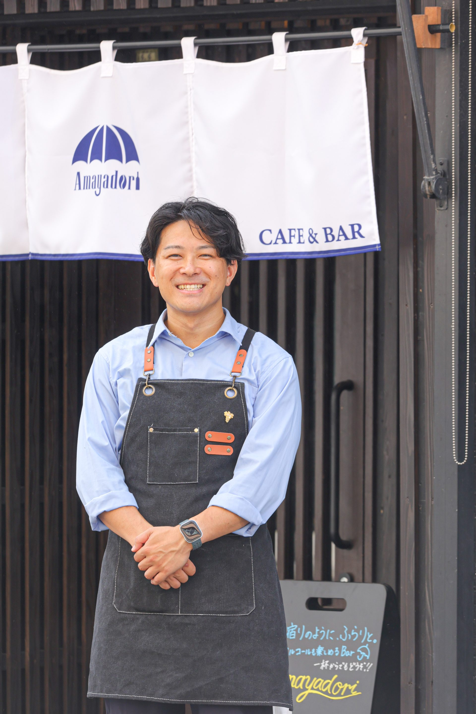
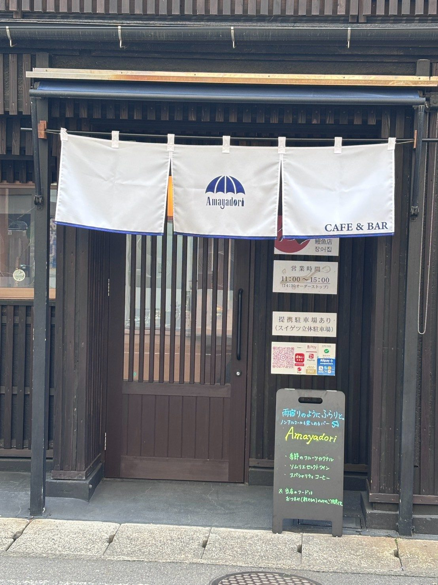
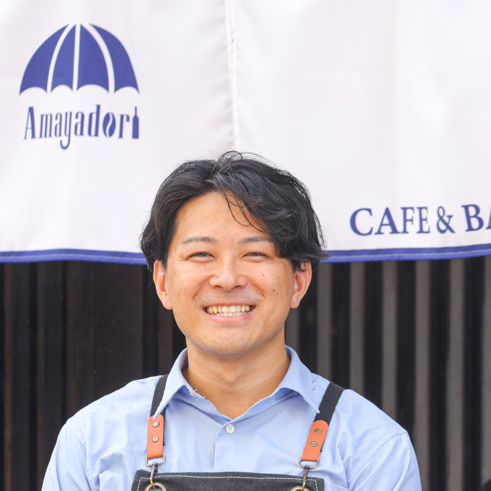
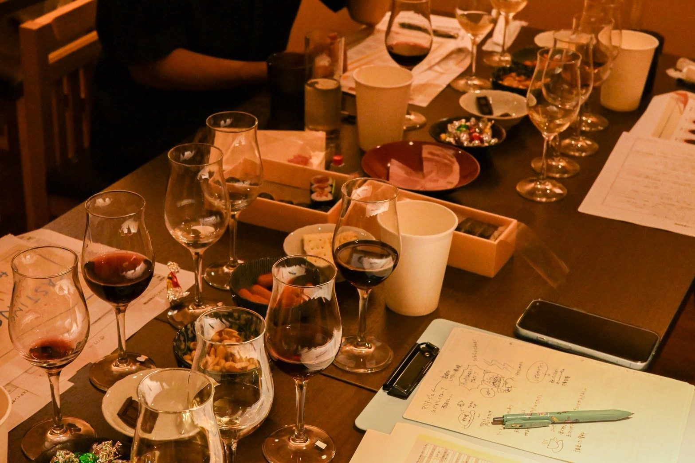
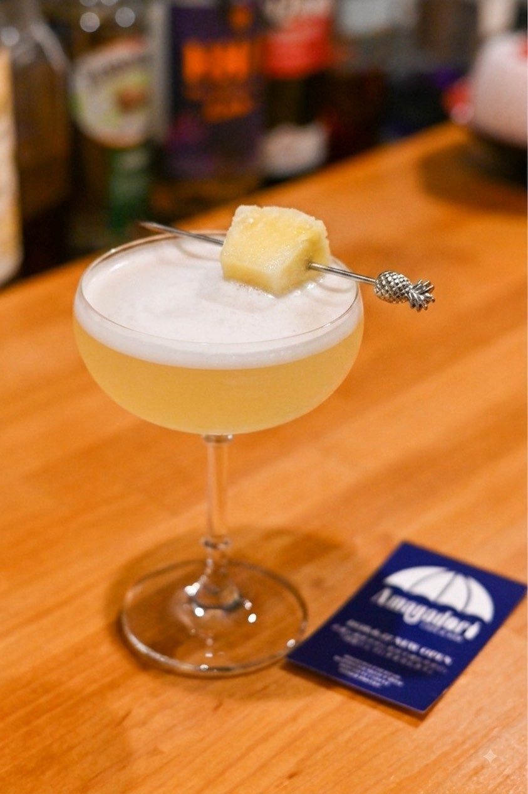
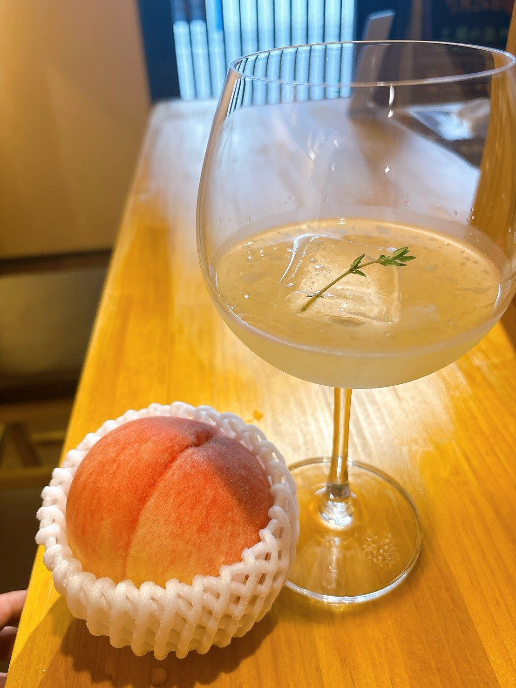
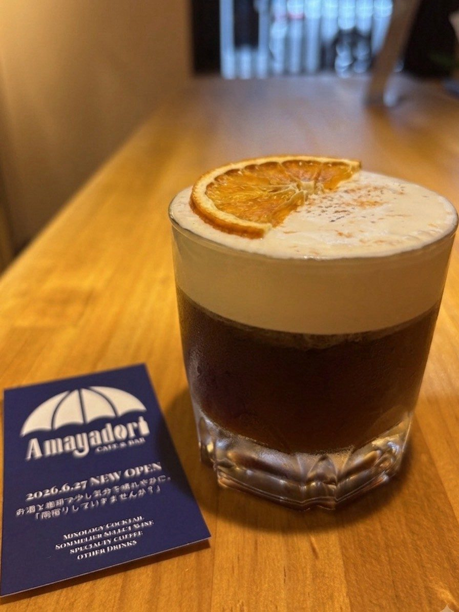
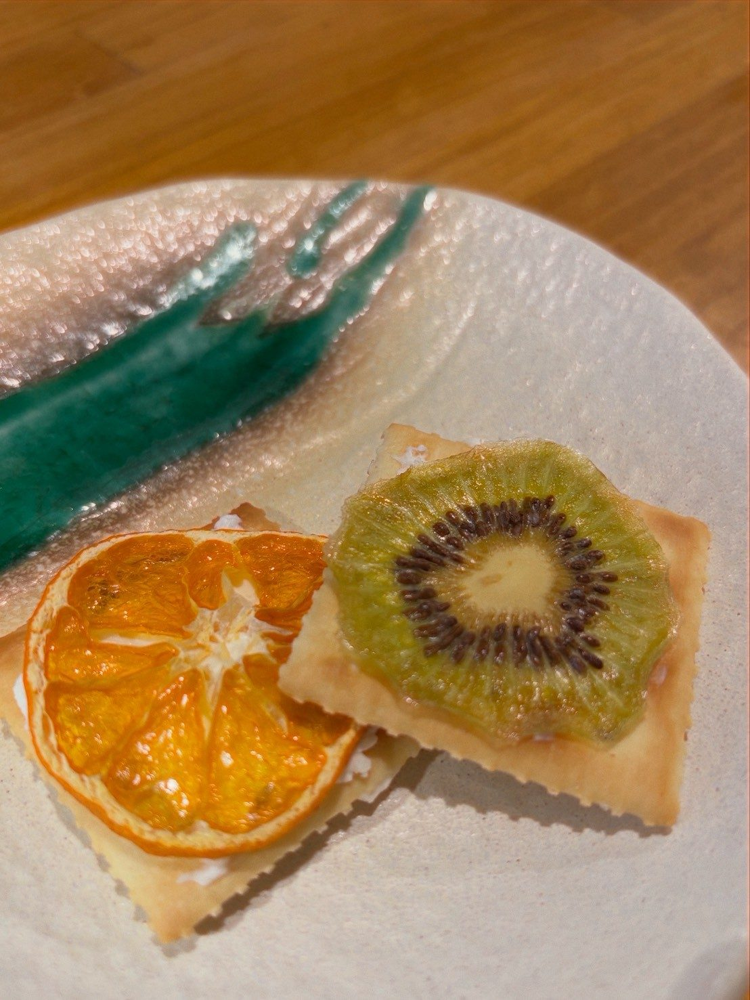

Mixologyカクテル
季節のフルーツや自家製シロップを使ったオリジナルカクテル。「Peach & Ginger」など、季節替わりのシグネチャーもご用意。

01 — About／わたしたちについて
現代の私たちは、常に「正解」や「効率」を求められる日々にいます。SNSでのつながり疲れや、自分をさらけ出す場所の欠如。晴れの日ばかりを求められ、少し疲れてしまった時に必要なのは、雨が止むのをじっと待つような、静かで優しい時間ではないでしょうか。
店名「Amayadori（アマヤドリ）」には、そんな想いを込めました。
落ち込んだ時、元気をもらいたい時、ふと軒先で雨宿りをするように、この場所へ立ち寄ってください。一杯の飲み物と会話を通じて、明日への活力を持ち帰っていただけるように。「雨宿り」の後の空が、少しだけ明るく見える。灯りを灯して、あなたをお待ちしています。


店主より
神園 涼Ryo Kamizono
元教師、そしてJSA認定ワインソムリエ。人と向き合ってきた経験を活かし、カウンター越しにあなたのお悩みにもそっと耳を傾けます。“雨宿りしていきませんか？”
“雨宿りしていきませんか？”
一杯のお酒と、少しの会話を。
ここは、心の晴れ間を見つけるための場所です。
02 — Menu／愉しみ方
4つの愉しみ方から、その日の気分に合う一杯を。
下記は一例です。詳しいメニューは店内・Instagramにてご案内しています。
季節のフルーツや自家製シロップを使ったオリジナルカクテル。「Peach & Ginger」など、季節替わりのシグネチャーもご用意。
JSA認定ソムリエの店主が、その日の気分や会話に寄り添う一杯を選びます。グラスから気軽にどうぞ。
夜だから飲みたい、じっくり淹れる特別な一杯。お酒が苦手な方にもゆっくりくつろいでいただけます。
ワインやコーヒーを学べる少人数制の勉強会・テイスティングセミナーを不定期開催。詳細はInstagramにて。
03 — Gallery





04 — Access／アクセス